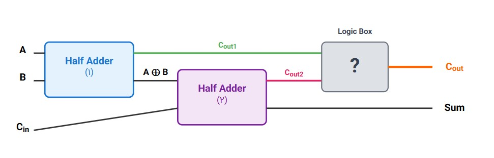

مدار Full Adder
مدار منطقی

جدول صحت
ستونهای خروجی را با مقادیر 0 یا 1 پر کنید
Cout نهایی
Cout2
Cout1
Cin
B
A
Cout1: خروجی Half Adder اول
Cout2: خروجی Half Adder دوم
Cout نهایی: خروجی نهایی Full Adder